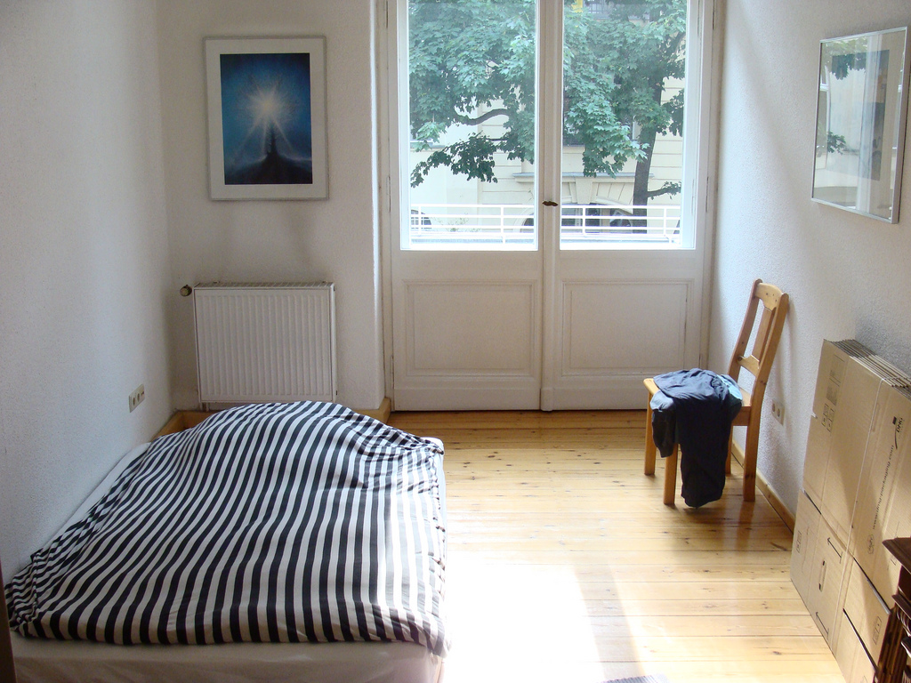

Alan's Guide to the Galaxy Moving to Berlin
Intro
When I first got to Berlin, I had little to no idea what the whole process of getting an apartment looked like. I'm from Buenos Aires, so things work a bit different there. I hope this guide helps!
Please note that this is based on my own experience (I'm not an expert here), so take this for what it is: advice from a stranger on the Internet.
For this guide, I’ll assume that this is the first time you’re moving to Berlin and that you already solved any work/visa related issues.
Alright, a few warm up tips to start then:
Tip #1
Don't panic! There are many things to keep in mind, but you will do just fine.
Tip #2
Find somewhere temporary to stay for the first month or two. May be obvious to some, but you can’t rent an apartment remotely, you have to be here in person.
Tip #3
Open a bank account. You will need it to transfer the deposit and pay your rent (as well as all the other services). Paradoxically enough, to open a bank account, you need a postal address. You can use the one where you temporarily live though (but take Tip #3 into account).
Tip #4
Being able to receive mail is highly important, especially at first. Beware that the postal service uses both the address and the name on the door to deliver. The name on the door has to match the recipient’s name on the envelope, otherwise it won’t be delivered.
If you’re staying at someone else’s house, a way around it is to address the correspondence to your friend or to address it to “«your friend’s name» c/o «your name»” (eg. “John Doe c/o Alan Reid”).
Types of rentals
WGs
It’s very common (especially among students) to share an apartment and split the costs. These are called “WGs” (Wohngemeinschaft).
You can find shared apartments here:
- WG Gesucht (this one has non-shared as well if you filter them out)
- Easy WG (Facebook Group)
- WG Wohnung Berlin (Facebook Group)
Temporary rentals
Temporary rentals are usually more expensive, include furniture and probably require a lot less documentation.
If you have friends already living in Germany, ask if they know people in Berlin who will be out of city for a while. Many people travel and may be willing sublet their apartment to a friend of a friend.
Permanent rentals
On the more permanent side, you have both contracts that are limited to an amount of years (befristet) and contracts for an unlimited amount of time (unbefristet). The former are to most common ones, normally limited to about two or three years.
The most used website is: ImmobilienScout 24
Before you start
Documents
- Copy of your passport (or an Ausweis if you're german)
- Proof of salary
Most of the time you will be asked for your last three salaries. If the receipts are not in german, you may have to translate them (english is usually ok, tough). Some have a limitation in which your salary has to be at least 3 times the rent, but that may vary. - Schufa Auskunft
This is basically a credit check you can pay and do online. They check you don’t have any negative credit behaviour. No activity is still positive, so if you’re new in Germany, there’s nothing to worry about. You may have to go to a Deutsche Post branch and show your passport to validate your identity. - Mietschuldenfreiheitsbescheinigung
Yes, this is a word. It’s a paper signed by your previous landlord that states that you left with no debts. An end of contract or the last paid receipt of your rent will usually work as well if you don’t have this.
Please note that this is only valid for the more permanent type of rental. WGs and temporary rentals are probably simpler.
Tip #1
They will ask you to email these documents, so a scanned copy is usually fine.
Finding an apartment
Everybody has different preferences regarding apartment sizes, prices, neighborhoods, etc, so I won’t go there. What I will tell you, is that each neighborhood has a unique atmosphere. Some are more outgoing or trendy, others are more residential.
You will have to find which one fits your needs and likes on your own. I strongly recommend to visit each neighborhood and don’t rely too much on people’s opinions.
The process
The way you get an apartment, is more or less as follows:
- Search online and filter out the apartments you don’t like
- See if there’s an open visit. If not, send a message and schedule one.
- Go to a visit. They’re mostly group visits, so ask questions and hear other people’s questions.
- Apply if you like it. The agency will hand out a form you can complete, so take a pen.
- Hear back from them.
- Send over your documentation.
- Get accepted.
- Get interviewed.
- Sign the contract.
- Move in.
Please note that this is only valid for the more permanent type of rental. WGs and temporary rentals are probably simpler.
You will spend most of your time between 1 and 4 (it took me about two weeks of visits every other day, but this may vary a lot from person to person). After you hear back from them, 6 to 9 can be as quick as a few days or a week, depending if the apartment is immediately available or not.
Things to look at
-
Warm/Kaltmiete (warm/cold rent)
Warm rent means the price includes the heating costs. Most websites just display the cold rent in the listing and the total rent (Gesamtmiete) in the details. So take that into account when browsing. -
Heating
Does the apartment have a thermostat or is it central heating? Also, all apartments must have a certificate that shows the level of insulation. Better insulation means less heating costs. This certificate is sometimes published. -
Agency commission
Does the agency get a commission? How much? -
Deposit (Kaution)
Usually three months of the total rent.
Tip #1
Beware of scams. If the pictures are too good to be true, they probably are (especially if they include furniture). Don’t ever accept to pay anything before signing the contract. Not even via AirBnB, it’s a trap.
Tip #2
Arrange visits all over the city, so you can get to know the neighbourhoods. Take a walk after you’re done with your visit.
Tip #3
Lots of apartments become available every day, but they get rented very quickly as well. This means that you will have to apply for as many apartments as you can and try not to stress out too much if you didn’t get the one you liked (there’re plenty of others, though).
Tip #4
U-Bahn has three zones: A, B, C (A being the most centric zone, and C the suburbs). You will probably want to be in A or B near a U-Bahn line.
Tip #5
When an action is required on your end, try to act as fast as possible. This increases your chances of getting picked.
Tip #6
Most sites have an alert feature you can set up. This allows you to define a search and get a daily emails with apartments that match. I highly recommend this!
Tip #7
In Germany, a property can be managed by company and you may never meet the landlord. These companies tend to be a bit more bureaucratic, so have your documents prepared.
Tip #8
There is a special type of social apartments rent that you can get for a lower price. For that you need apply for a WBS.
Visits
I’d say most visits take about 10-15 minutes, depending on the amount of people.
Things to look at:
- Does it include the kitchen installation (Einbauküche)? Might sound weird, but in most apartments you have to buy and install this on your own ($$$!)
- Are the windows any good? Good windows mean less heating costs.
- Is there any damage? Will it be repaired before you move in?
Tip #1
Arrive 10-15 minutes early. You’re in Germany, if you’re late, chances are you lost the visit.
Tip #2
Apartments are usually empty and don’t have electricity, so try to schedule visits early in the day before it gets dark.
Signing the contract
You usually have a few days to read the contract and negotiate the terms. Try to move fast, but be careful with what you sign, mistakes can be expensive.
Tip #1
Make sure you understand what the conditions are, what is expected of you and what the cancellation terms are. If you don’t speak german, ask if you can get a translation. Otherwise, find someone you can trust that can explain it to you.
Tip #2
Some landlords may ask you to have a liability insurance (Haftpflichtversicherung) after signing your contract. Whether they ask you for it or not, it’s always a good idea to get one just in case. They cost somewhere between €40-70 a year and you can buy them online. You can compare a the companies here: check24.de/haftpflichtversicherung
Basic Services
So you finally went through this nightmare and got yourself a nice apartment. Well done!
Anmeldung
Now you want to set up your basic services, right? Well, there’s one more bureaucratic stop you for you: the infamous Bürgeramt (Civic Center).
You have to let the Bürgeramt know that you moved and where. This is called Anmeldung (registration) and it basically involves getting an appointment (Termin) and complete some forms.
Bürgeramt appointments are unfortunately very hard to get, so most people just go very early (like at 6am) and wait in line to get one. You can go to any Bürgeramt in Berlin and they give away a limited amount of appointments per day (this only works on Mondays, Wednesdays and Fridays). You may have to go several times until you get one.
There’s also this Greasemonkey plugin you can try (it worked for me!):
https://www.reddit.com/r/berlin/comments/3v0op4/how_im_trying_to_solve_everyones_frustrations/
Documents needed for the Anmeldung:
- Passport
- Registration form (Anmeldeformular) - Download here
- Confirmation that you moved signed by your landlord (Einzugsbestätigung des Wohnungsgebers) - Download here
Once you do this, you will be able to sign up for your services.
Internet
Internet usually takes a few weeks, depending on the provider.
Electric/Gas
You may need to sign up with an Electric/Gas company depending on your contract’s conditions. You can find one here: check24.de/strom-gas
After a few weeks of registering in the Bürgeramt, you will get two notifications per mail.
Finanzamt
One from the Finanzamt (the german IRS) in which they will assign a number/ID to you. You will need this number later on when filing your taxes.
Rundfunkbeitrag
The other one is for the Rundfunkbeitrag (broadcasting service contribution). There’s a mandatory contribution of €17 per household per month for TV and Radio broadcasting. I know, WTF, right? The idea behind this, is that having broadcasting services that don’t depend on private or government funding is a right. The only way to guarantee that is for citizens to fund it themselves without intermediaries. Since it’s a law, you have to pay for it whether you have a TV/Radio or not. You can choose to pay this every quarter, a year in advance, etc.
Tip #1
Archive all the mail you get, don’t throw it away!
Final thoughts
It may seem like a lot, but it’s not that complicated once you get into it.
Let me know how it went! If this was useful to you, I’d gladly accept a beer in return :D
I’m also open to adding stuff or correcting this guide, so please let me know feel like something's missing or wrong.